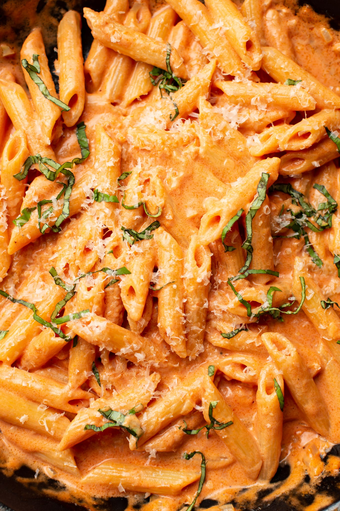

Penne alla Vodka Recipe

Description
A DELICIOUS pasta dish using penne pasta covered in a silky tomato cream sauce.
Easy to make, quick to prepare, and a joy to eat!
Ingredients
- 8 oz. of uncooked penne pasta
- 1 tbsp. of olive oil
- 2 tbsp. of butter
- 1/2 small onion (chopped)
- 1 clove of garlic (minced)
- 1/4 cup of vodka
- 1/4 cup of tomato paste
- 3/4 cup of heavy cream
- Salt & Pepper
- Basil
- Parmesan cheese
Steps
- Boil a salted pot of water for the penne and cook it al dente.
- Add oil and butter to a skillet over medium heat. Sauté the onion for about 5 minutes.
- Stir in the garlic and cook for about 30 seconds.
- Add the vodka and let the sauce bubble for about 30 seconds.
- Stir in the tomato paste until the mixture is smooth.
- Stir in the cream and reduce heat to medium-low.
- Season with salt & pepper. Stir in the basil.
- Toss with the drained pasta.
- Serve with parmesan cheese.
Homepage